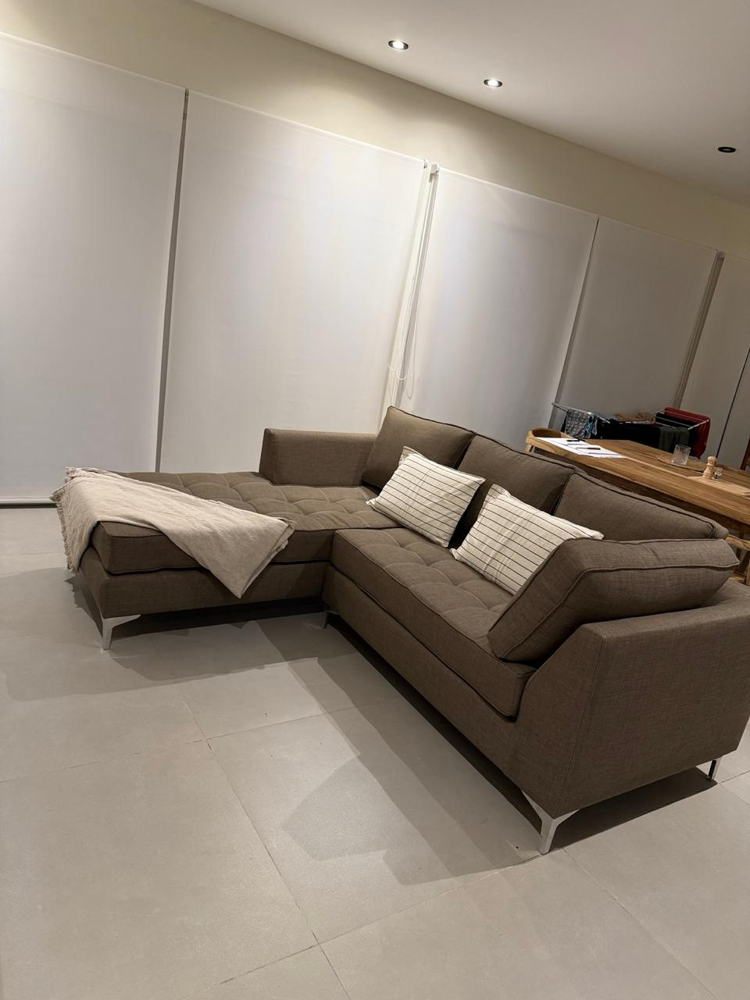
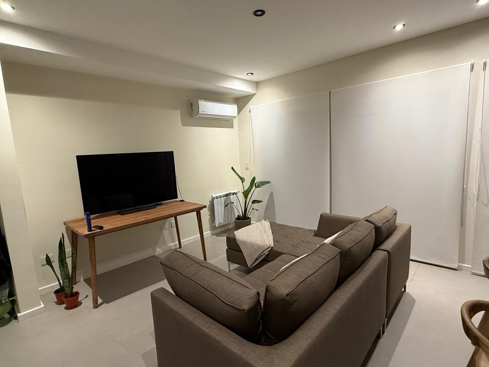
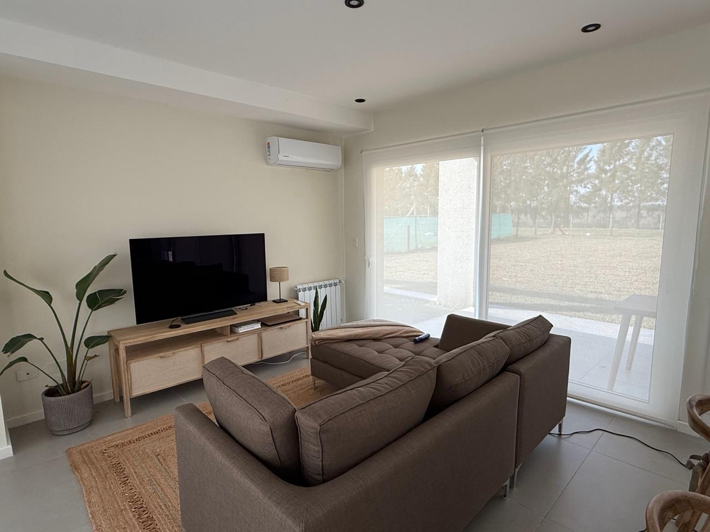

🪑 Muebles
Sillón esquinero en L con camastro — Tela hidrorepelente taupe
🟢 Como nuevo📦 Entrega tardía · aprox. 7 al 21 de septiembre
Sofá esquinero en L con camastro extenso de 180 cm, ancho total 220 cm y profundidad de asiento 70 cm. Tapizado en tela de textura tipo lino en color taupe, con tratamiento hidrorepelente que repele líquidos y facilita la limpieza. Patas de metal cromado, almohadones de respaldo y base del camastro desmontables. Diseño moderno de líneas limpias, ideal para living amplio.
$ 650.000
Consultar por WhatsApp
Los precios son flexibles, ¡animate a consultar! · Ver los demás artículos